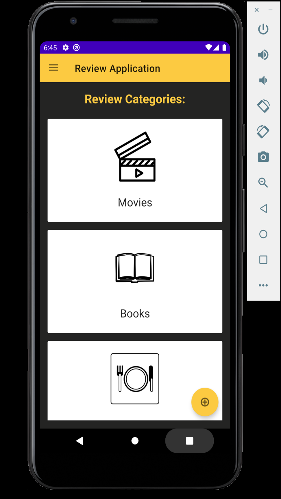
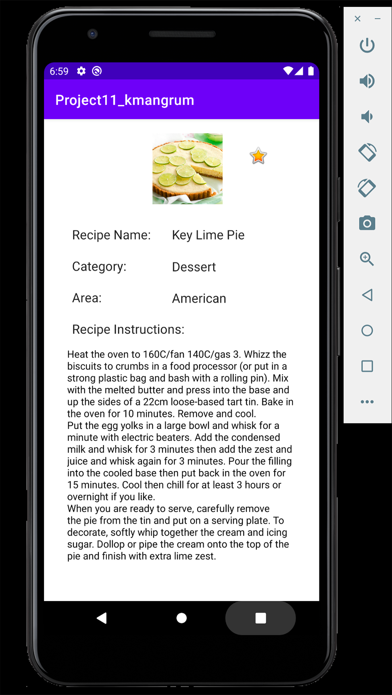
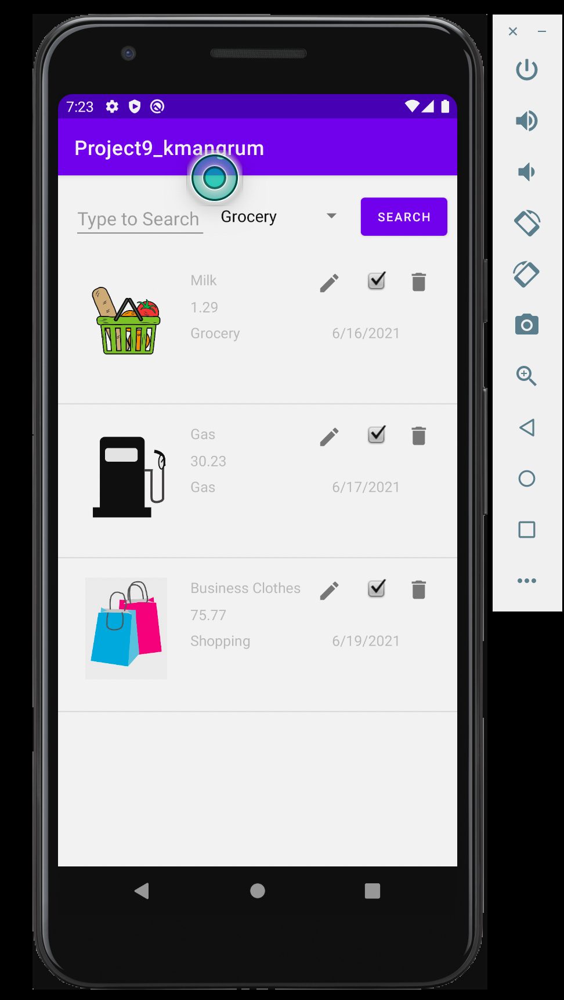

WhatNow?
WhatNow? is a web application that myself and three other Indiana University Informatics students created for our Capstone Project. The purpose of WhatNow? was to create an application that helps people to find activities and events that they can do or attend, either by themselves or with a group of friends. The application enables users to create a profile, create new activities, search for activities using various criteria, like and plan activities for later viewing, add friends, and invite friends to join them for activities. Check out copies of the code for the app here.
Technologies used: HTML, CSS, JavaScript, PHP, MySQL, Google Login API, Google Maps API
Simulated School Database
Myself and three other people had to construct our own database to simulate one that a school might have. The database had to consiste of students, teachers, classrooms, courses, advisors, majors, and majors. After creating our database and filling it with realistic data, we were tasked with using MySQL to query the database in several different ways to mimic how a school's database might be. This was our first course working with PHP and MySQL, which were the focus of the course. The goal was to query correctly and have everything function properly rather than look nice. Check out copies of the code we wrote here.
Technologies used: HTML, PHP, MySQL
WeatherApp

For a class focused on learning more about JavaScript, I was tasked with creating a simple user interface page that enabled users to input either a city name or zipcode and recieve weather information about that location. The weather information is retrieved using the OpenWeather API. The information returned includes the current temperature, humidity, conditions, and wind speed. The background of the page also changes based upon the current conditions of the location. Check out my code here.
Technologies used: HTML, CSS, JavaScript, OpenWeather API
Meme Generator
For a class, we were given a few images to incorporate into a user inferface that is meant to allow users to create memes in the classic style of having text on both the top and the bottom of a "funny" image. The page needed to allow the user to choose what image they wanted to use, as well as have places to insert both top and bottom text. The text for both the top and bottom needed to wrap in order to stay within the width of the image. Check out my code here.
Technologies used: HTML, CSS, JavaScript
Etch A Sketch

For a class, we were given an image to use as a background to make our interface appear that the user was drawing on an iPad. We were tasked with providing various options for users to choose from to customize their line. The user can change the color of the line from black, wild (continuous random color), rainbow, or a single random color. Users can also change the width of the line. There is also the ability to erase parts of the drawing, or erase the whole screen. Check out my code here.
Technologies used: HTML, CSS, JavaScript
Personal Website
For a web design class my sophomore year, the final project was to create a personal website/portfolio that consisted of at least 7 different pages. We were given the freedom to put whatever we desired in our website as long as it met the requirements of having a certain number of pages, elements, and images. We were also supposed to make the website as mobile friendly as possiblem meaning that the site needed to be responsive based upon the size of the window. Check out my code here.
Technologies used: HTML, CSS
Review Application
For an Android App Development class final project, we were tasked with creating an application that stored reviews for various categories of things such as electronics, movies, books, and restaurants. We were able to work on this project with a partner, so I worked with a fellow student named Daniel Murphy. The app allowed users to create new reviews and store various pieces of information in a Room database within the app. The app also incorporated a MapView that displays the location of the thing being reviewed, such as a restaurant's location. Check out a copy of our code here.
Technologies used: Android Studio, Java, Room Database, MapView
Food Database Application
Check out my code here.
Technologies used: Android Studio, Java, The MealDB API, Room Database, Google Ads
Expenses Database
Check out my code here.
Technologies used: Android Studio, Java, Room Database
Get Weather & Movie Database
Check out my code here.
Technologies used: Andorid Studio, Java, OpenWeather API, The MovieDB API